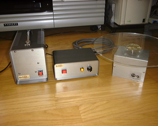
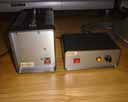
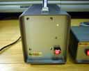
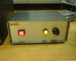
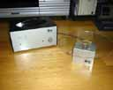
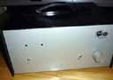
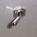
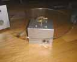

さくまひろし氏に頼まれて作った 看板を乗せるための回転台「くるるん」の改良／修復版 です。会場によっては電源が確保できるため、そのようなときに重いバッテリを持って 行かなくてすむよう鉛蓄電池とモータのドライバ部分を分離しました。 また「くるるん」はシャーシが大きすぎたので今回はより合ったものを選びました。 さらにトグルスイッチが輸送中にぶつかったりして破損したり、間違って電源が入って しまうということがあったようなので、トグルスイッチよりも破損しにくい形状の ランプスイッチに変更したり、スイッチカバーを取り付けたりしました。
ｂｙ すすたわり






